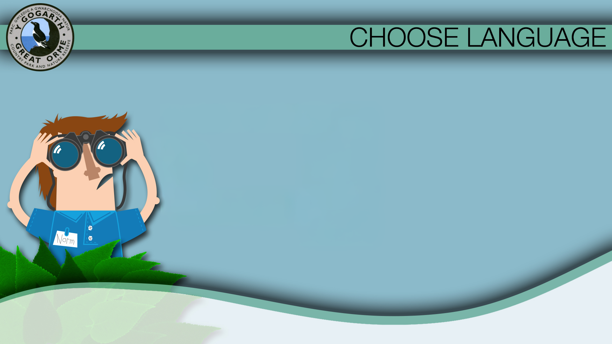

Interactive map
Map-led route with seasonal, category and point-of-interest hotspots.
- Wildlife
- Geology
- History
- Attractions
- Places to Eat

Main Menu
Over half a million visitors come here each year to admire the beautiful scenery and catch a glimpse of the rare species of wildlife, both animals and plants, which can only be found here.
Use the maps to EXPLORE the Great Orme's many attractions, or join our Country Park Warden to DISCOVER some of the Great Orme's secrets.
Map-led route with seasonal, category and point-of-interest hotspots.
Warden-led content flow with questions, answers and deeper story pages.


Today, the Great Orme is a Country Park, a place for recreation and relaxing. But people have lived and worked here for centuries. As you walk around, it is worth remembering the people who were here before you. So join our Country Park Warden as he reveals some of the secrets of man's impact on the peninsula...
Q1: The name "Great Orme" is believed to come from the Norse (Viking) word "orm" meaning
Viking sailors may have thought that the headland looked like the head of a great sea serpent in the mist, and are believed to have called the Orme "Horma Heva". But they were not the first people to come here...
Q2: Can you guess when the first visitors came to the Great Orme?
The first inhabitants of the Great Orme were Stone Age hunter-gatherer tribes who came across from Europe over 15,000 years ago when Britain was still joined to the European mainland. They sheltered in the many caves around the Orme, and remains have been found of stone axes, flint scrapers and decorated animal bones.
Q3: Which metal do you think was used first to make tools and weapons?
Bronze is a hard metal made from copper & tin, and the local copper deposits allowed an important mining community to flourish here around 3,500 years ago. Bronze was so important to early mankind that this period and its peoples are called the Bronze Age.
Around 800 years BC, Celtic tribes from Europe brought iron-working skills and built well-defended hill-forts and elaborate burial monuments. The hill fort of Pen Dinas contains the remains of over 60 roundhouses, and there are also many important Stone Age archaeological finds here on the Great Orme.
There is no evidence that the Romans settled here, but there are medieval settlements on the Great Orme which show a well-established community. Cyngreawdr stood around St Tudno's church, which survives to the present day. You can see the remains of houses just below the summit, and clearly visible remains of the medieval "ridge and furrow" farming system.
Farming continues today at Pink Farm and Parc Farm. Much of the headland became a Country Park in 1980 and tourism is now the main activity of the Great Orme. Today, the Park attracts over 600,000 visitors a year.
Q4: When do you think the trend for sight-seeing and tourism started?
In Victorian Britain, shorter working hours and the wealth created by the Industrial Revolution created a boom in leisure activities for all classes. From 1878, the rich could tour the Marine Drive toll road in their horse drawn carriages, and in 1902, the Tramway was completed, bringing crowds to the summit area, where an old telegraph station had been rebuilt as a hotel and is now a cafe.
The Great Orme was a vital part of the war effort during the Second World War: the Royal Artillery coastal gunnery school relocated from Shoeburyness in Essex to the west shore of the Great Orme in the summer of 1940 to avoid damage from enemy bombing. The shallow seas off the headland provided the ideal place for anchoring target ships.
You can explore the map to see where all these features are, or discover many more fascinating features of the Great Orme's history by Taking a Tour.
The Historical Trails booklet can be bought at the visitor centre shop, and contains two circular walks from the summit of the Great Orme over a landscape rich in historical remains. Route A takes around 2 1/2 hours, Route B takes 2 hours. They can be combined into one route of 7.4 miles. The track is steep and uneven in places, and walking boots are recommended.
The Great Orme is a spectacular headland 3 km long and 207 metres high, formed from rock created over 300 million years ago and shaped by the forces of nature ever since. We call the study of rocks geology, and the Great Orme has many nationally important geological features: let's take a tour through those 300 million years...
Q1: Do you think that the Great Orme is the remains of an extinct volcano?
The Great Orme is made of limestone. All this area was once at the bottom of the sea, and the shells of all the sea creatures and corals were crushed together to form rock. You can see fossils of many of them in the limestone at Bishop's Quarry, but please do not try to remove them. As limestone is very hard, rock was taken from here to build a palace for the Bishop of Bangor in the 13th Century.
Volcanic forces under the Earth's crust made it shift and buckle, and the once-flat layers of rock were ripped apart in different directions and left lying at various angles, as you can see on the cliffs.
Q2: Molten rock and gasses were forced up through the rocks: what do you think this would do?
The cracks and caves were formed by later weathering; the volcanic magma created veins of copper minerals, including striking green Malachite.
Q3: Can you guess what had the biggest impact on shaping the Great Orme?
During the last Ice Age, there would have been over a kilometre of ice above our heads. The pressure of the ice in the glaciers scraped across the rock, creating the rounded shape we see today.
Q4: Do you think this stone was:
As the glaciers moved, they ripped up large stones and dropped them again. These stones are called glacial erratics. This one is called "The Mother & Daughter".
You can explore the map to see where all these features are, or discover many more fascinating features of the Great Orme's geology by Taking a Tour.
The Summit Trails leaflet can be bought at the visitor centre shop, and contains three scenic walks with stunning views; running from the town of Llandudno to the summit of the Great Orme, or followed in reverse from the summit to Llandudno. The tracks are steep and uneven in places, and walking boots are recommended.
• Haulfre Gardens Trail: 1 mile. Allow about 1 hour.
• Happy Valley Trail: 1½ miles long. Allow about 1½ hours.
• Zig Zag Trail: 1 mile. Allow about 1½ hours.